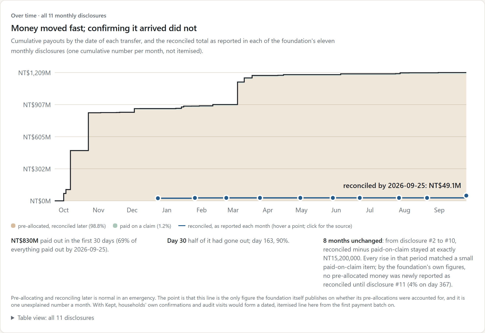

Real data · not simulated
Guangfu 2025: the money moved, the trail stopped
From the national relief foundation's eleven monthly disclosures, transcribed by hand

Live chart: kept-lilac.vercel.app/replay
Kept · github.com/ZhenYan1214/kept